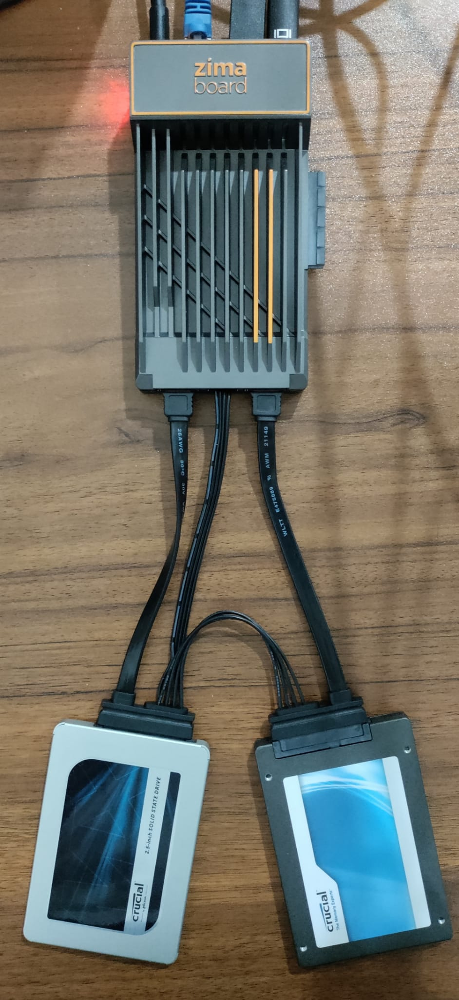
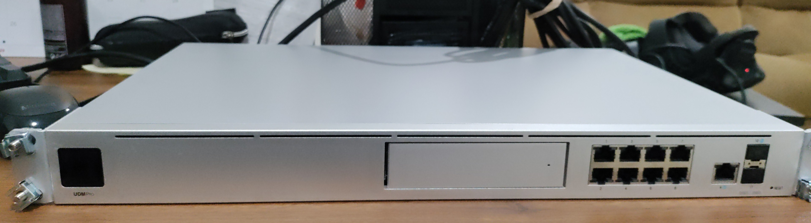
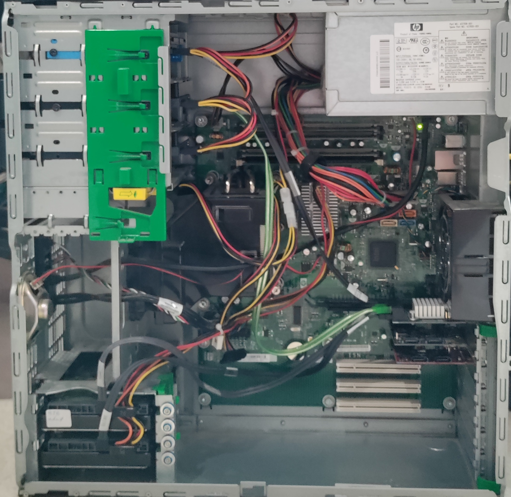
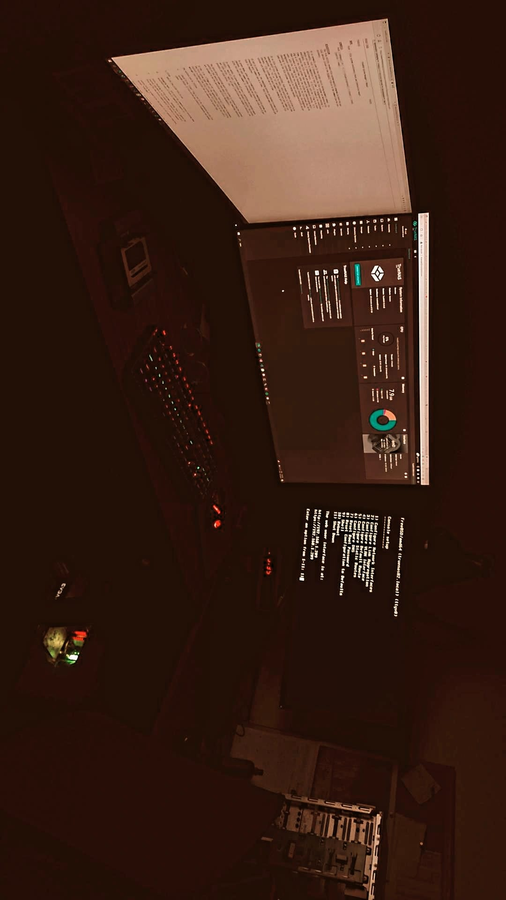
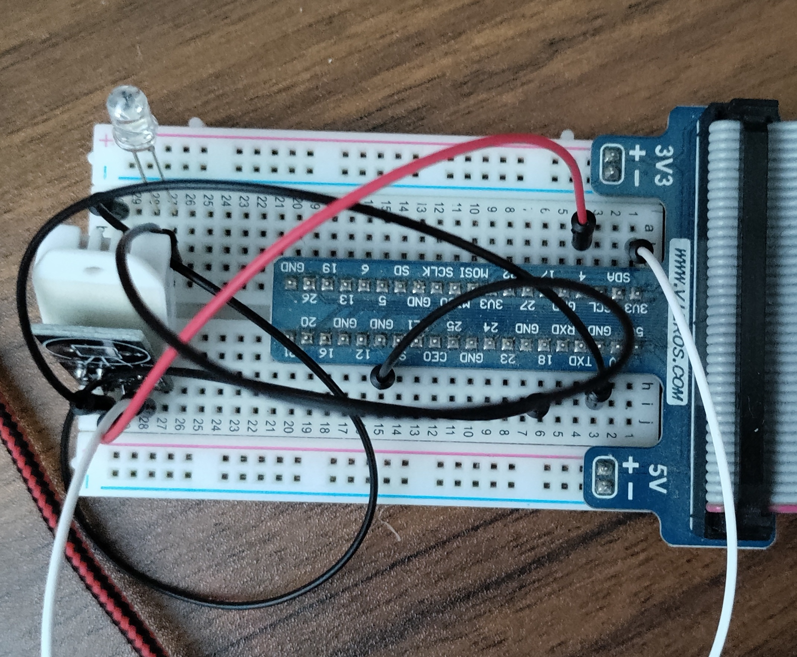
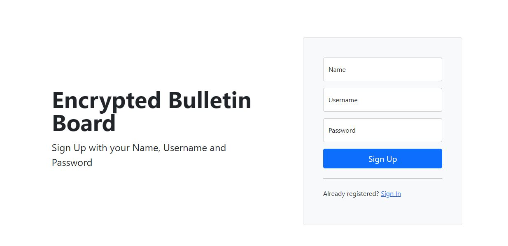
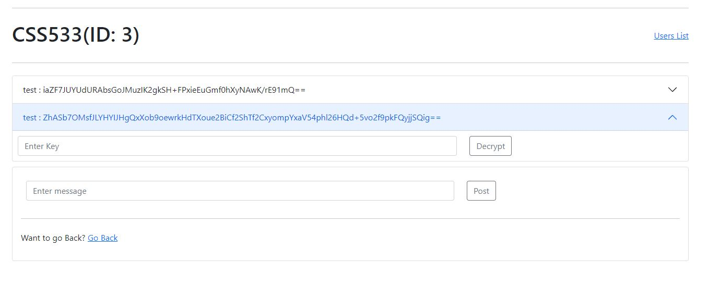
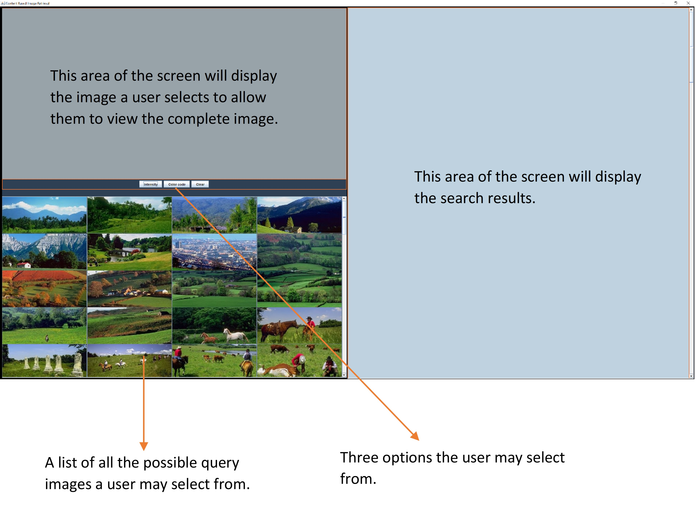
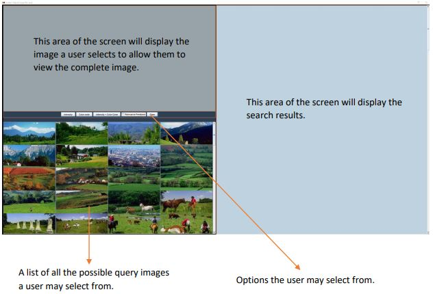

So I've played around with an old PC that was salvaged and turned into a Network Attached Storage Machine (a NAS). It did the job but was running on some pretty old hardware. It was time to upgrade to something maybe slightly more powerful and most importantly, energy efficient.
The ZimaBoard 832 is equipped with an Intel Celeron N3450 processor with a quad core.It comes with 8 Gb RAM and 32 Gb Internal Storage. This should be sufficient to run a lightweight Operating System. The zimaboard is pre-installed with CasaOS, an open-source OS perfect for Home Cloud Applications.
After playing around with this device, it was time to start experimenting the features and prepare it to be converted into a NAS. The first thing we did was installing Windows 10 Entrprise LTSC. This is a stripped down version of Windows 10. It does not have bloatware or applications that may change over time. In essence, this OS provides features and functionality that are not meant to change over time.
Next, to make sure this system is fault-tolerant in case of a drive failure, we mirrored the OS on two seperate SSDs. The instructions to successfully mirror the OS lacked some details and took sometime to figure out. It was not straight forward doing this because the Disk Management application produces errors that are not very helpful.
After quite some tinkering, replacing drives, and fresh installs, I realised that the Recovery partition on the Primary OS drive needs to be deleted. I am not exactly sure why we need to do this but I will be back with an update. I was finally able to mirror after doing so and voila! The OS is mirrored and we're a step closer to building the NAS.
The goal of this project is simple. We want to migrate everything on the old TrueNAS machine onto this tiny computer. This will be home to a Plex server with a library of movies, videos, and more.
A recent fun activity I engaged myself into was playing with a Unifi UDM Pro Router.
This is hands down, a nerdy and fun router. It is not your regular router by any means.
It is typically meant for small-scale businesses. So it all started with the network going
down for 2-3 days. It was challenging to identify what was wrong initially . Eventually,
it all came down to be an issue with a recent firmware upgrade. I figured the Unifi router automatically upgraded to the latest firmware even though auto updates were turned off.
It was interesting to observe during testing, that nearly 20% of the CPU and 40% of memory were being used up even when no
devices were connected to the router. The router was operating at around
45° C at the same time. What was the router doing anyways?
Well, I don't have an answer yet. But I look forward to finding out at some point.
**Update as of February 2, 2023**
So it turns out a USB Hub was causing the issue. In particular, it was a Lenovo Docking Station that brought the network down to it's knees.
Although we identified the device causing the issue a few months ago, we did not know the exact reason until today. One possible reason behind this disruption is that these hubs flood the network with some sort of traffic.
There still is a part of the problem we are not very sure of. What kind of traffic is this Dock flooding the network with? Although some discussions on the internet pointed that these could be 'Pause frames' that the switch is not handling well.
The part that annoys me the most is that the Dock is powered but disconnected from the laptop, it still manages to push "something" into the network, causing a disruption.
I realized just how widespread this problem is while reading some of the discussions on forums. However, these discussions seem to be very specific to a community of folks who have a deep understanding of Hardware and Networks.


TrueNAS is an open-source operating system installed on machines to be used as Network Attached Storage devices. I was trying to get a TrueNAS up and running after a network outage.
The TrueNAS I was working with had Two hard drives dedicated for the Operating system each 500 GB. It was built out of an old repurposed workstation.
For storage, there were a total of 4 drives, Two 8TB and Two 4TB hard drives.
For some reason, the backup OS image disk did not function properly. On bootup, there were a bunch of errors mainly indicating that the kernel could not be found. I tried several fixes and none of them worked.
Lastly, I got rid of the backup OS disk for the time being to make sure the TrueNAS was up and running.
**Updated on February 7, 2023**
There is a good chance the outage that brought this TrueNAS down was because of the Dock!


I used a DHT22 sensor connected to a Raspberry Pi, utilising its GPIO ports. The Weather station logs the Temperature and Humidity into a database, along with the time and date.
I was running Postgres on the raspberry pi where the data is stored. Later, I used another Raspberry Pi. With two Raspberry Pis, I used one to record the temperature data and the other as the database running Postgres. Both the devices were connected over the same network, but required a little configuration. Lastly, all of this was hosted on Apache Webserver.
I developed a simple html page to display the data.

This is a Web based Bulletin Board application using Springboot. The application allows users to post
messages on boards created by them or created by other users. Messages are encrypted upon posting
and require the correct key to decrypt the message. All the data was stored on databases managed by Postgres. This webapp was hosted on Microsoft Azure as well.


A fascinating project to have worked on was the CBIR App. Images were broken down to the simplest form - RGB components. The RGB components were processed to compute the Intensity and Color Code. Both these Color histogram based methods transform RGB intensities into 8-bit and 6-bit representations respectively.
Later, histogram bins are used to categorize each pixel into them based on the intensity.
